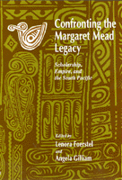

A multicultural outlook scrutinizing Mead's impact on Western anthropology
A multicultural outlook scrutinizing Mead's impact on Western anthropology


 A multicultural outlook scrutinizing Mead's impact on Western anthropology
A multicultural outlook scrutinizing Mead's impact on Western anthropology

|  |
Confronting the Margaret Mead LegacyScholarship, Empire, and the South Pacificedited by Lenora Foerstel and Angela Gilliampaper EAN: 978-1-56639-261-7 (ISBN: 1-56639-261-6) |
"...valuable information, ideas, and contrasts."
—Choice
The legendary Margaret Mead changed Americans' views of themselves by relating information collected from remote peoples to our society—a society that she did not consider necessarily to be the pinnacle of human development. However, Mead and her followers have been criticized for promulgating sensationalized and inaccurate images of Melanesian societies, including savagery, cannibalism, and wanton sexuality. This book deals with the consequences of such Western condescension.
Destined to be highly controversial, this book for the first time brings a multicultural outlook to bear on Margaret Mead, scrutinizing her role and impact on Western anthropology, colonialism, and strategic and business interests in the South Pacific. The contributors, most of them avowedly activist supporters of the concept of a nuclear-free and independent Pacific, include Warilea Iamo, Papua New Guinea's first anthropologist; John D. Waiko, Director of the New Guinea Institute of Applied Social and Economic Research; Nahau Rooney, the daughter of one of Mead's informants, and; Susanna Ounei, a leader of a New Caledonian independence front.
"This book is a remarkable portrait of a scholar and a field, both fierce and fair. The conjecture of perspectives—ethnography and empire, personal history and public practice, voices from the Pacific as well as the United States—makes a document important for assessing anthropology, both past and future."
—Dell Hymes, University of Virginia, and editor of Reinventing Anthropology
"Mead's attitude toward and activities in relation to her country's foreign and military policies are under scrutiny here, and so is her relationship with the subjects of her research. Such critical assessment of leading scholars is crucial to improvement of academic research and scholastic work and building trust, confidence, and good relations among poe0ples of the world."
—Amelia Rokotuivuna, Young Women's Christian Association, Fiji, and former Chair of the Nuclear-Free Pacific Conference
Foreword – Peter Worsley
Preface – Angela Gilliam and Lenora Foerstel
Acknowledgments
Part I: The Margaret Mead Legacy
1. Anthropologists in Search of a Culture: Margaret Mead, Derek Freeman, and All the Rest of Us – Eleanor Leacock
2. Leaving a Record for Others: An Interview with Nahau Rooney – Angela Gilliam
3. Margaret Mead from a Cultural-Historical Perspective – Lenora Foerstel
4. The Stigma of New Guinea: Reflections on Anthropology and Anthropologists – Warilea Iamo
5. Margaret Mead's Contradictory Legacy – Angela Gilliam and Lenora Foerstel
Part II: Empire and Independence
6. For an Independent Kanaky – Susanna Ounei
7. The United States Anthropologist in Micronesia: Toward a Counter-Hegemonic Study of Sapiens – Glenn Alcalay
8. Anthropology and Authoritarianism in the Pacific Islands – Simione Durutalo
9. Tugata: Culture, Identity, and Commitment – John D. Waiko
10. Papua New Guinea and the Geopolitics of Knowledge Production – Angela Gilliam
 | Lenora Foerstel is an instructor in Ethnohistory at the Maryland College of Art. She was a member of the 1953 American Museum of Natural History Expedition to Manus Island, led by Dr. Margaret Mead. |
Angela Gilliam teaches at Evergreen State College in Olympia, Washington. She has served as adviser to the Papua New Guinea Permanent Mission to the United Nations on New Caledonia.
Contributors: Glenn Alcalay, Simione Durutalo, Warilea Iamo, Susanna Ounei, Nahau Rooney, John D. Waiko, Peter Worsley, and the editors.
© 2015 Temple University. All Rights Reserved. This page: http://www.temple.edu/tempress/titles/728_reg.html.